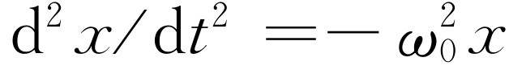
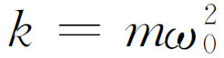

在学习物理学时，通常是把课程分成一系列的科目，如力学、电学、光学，等等，并且总是一门课程接着一门课程地学习。例如，到目前为止本门课程主要讨论的是力学。但是，有一件奇怪的事情却一再出现：即在物理学的不同领域中，甚至在其他的学科中，出现的方程式几乎往往是完全一样的，因此在这些不同领域中很多现象都有其类似之处。举一个最简单的例子，声波的传播在很多方面就与光波的传播相类似。如果我们深入地研究声学，就会发现要做的很多工作与我们深入研究光学时相同。所以，对一个领域中某种现象的研究可以扩展我们对另一个领域的知识。最好从一开始就认识到这种扩展是可能的，否则，人们就可能对为什么要花这么多的时间和精力来研究仅仅是力学中的很小一部分，感到不可理解。
我们将要学习的谐振子，在许多其他领域中都有相类似的东西，虽然我们从力学的例子，如挂在弹簧上的重物，小振幅的摆，或者某些其他的力学装置出发，但实际上我们是在学习某一种微分方程 。这种方程在物理学和其他学科中反复出现，而且事实上它是许多现象中的一部分，是值得我们认真研究的。包含这个方程式的现象有：挂在弹簧上的一个具有质量的物体的振动；在电路中电荷的来回振荡；正在产生声波的音叉的振动；电子在原子中产生光波的类似振动；描写调节温度的恒温器之类的伺服系统的操作方程；化学反应中一些复杂的相互作用；在养料供给和细菌产生的毒素共同作用下菌落的繁殖和生长；狐狸吃兔子，兔子吃青草等等；所有这些现象遵循一些彼此非常相似的方程式，这就是为什么我们要这样详细地研究机械振子的原因。这些方程称为常系数线性微分方程 。一个常系数线性微分方程包含几项之和，每一项都是因变量对自变量的微商再乘以某一个常数。如
称为n 阶常系数线性微分方程（每一个a i 都是常数）。
遵循常系数线性微分方程的最简单的力学系统大概要算是挂在弹簧上的一个具有质量的物体的运动：先是弹簧伸长以和重力平衡，待其达到平衡后，我们来讨论物体离开其平衡位置的垂直位移（图21-1）。我们称这个向上的位移为x ，并假设弹簧是完全线性的，因此，当弹簧伸长时，弹簧往回拉的力严格地正比于它的伸长的量。即力为-kx （负号提醒我们这个力是往回拉的）。这样，质量乘加速度应等于-kx
为了简单起见，假设碰巧（或改变时间的量度单位）比值k/m=1。我们先来研究方程
然后再回过头来研究明显含有k 和m 的式（21.2）。
我们已经对式（21.3）作过详细的数值分析；在最初引进力学课题时，为了寻求运动规律，我们解过这个方程［见式（9.12）］。利用数值积分，我们得出了一条曲线（图9-4），该曲线表明，假如质量为m 的物体在开始时就有位移，但处于静止状态，它将向下运动并通过零点；当时我们没有进一步讨论下去，但我们当然知道它一定在继续上下运动——即作振动 。当我们对这个运动进行数值计算时，曾发现，在t =1.570时它通过平衡点。而整个周期是这个量的四倍，即t 0 =6.28“秒”。这还是在我们对微积分不怎么理解的时候，用数值计算得出的。同时，我们设想数学系已经发表了一个函数，它的两次微商等于它本身再加上一个负号（当然也有直接得出这个函数的方法，但是这些方法比已经知道了答案再来讨论要复杂得多）。这个函数就是x =cos t 。对此式求微分得出：dx /dt =-sin t 和d2 x /dt 2 =-cos t =-x 。函数x =cos t 在t =0时从x =1开始，也没有初速度；这就是我们以前进行数值计算时的初始状态。现在知道了函数x =cos t ，我们就能算出通过x =0处的时间的准确 值。答案是t =π /2，即1.57108，由于数值计算有误差，所以我们以前得出的最后一位数字是错的，但它是非常接近的！
现在进一步研究原来的问题，我们把时间的单位恢复为真正的秒。这时方程的解又是什么呢？首先，我们也许会认为可以用cos t 乘上某个量的形式引入常数k 和m 。因此，我们来试一下方程式x =A cos t ；于是得到dx /dt =-A sin t 和d2 x /dt 2 =-A cos t =-x 。令人惊讶的是我们发现，我们并没有解出式（21.2），而是又一次得到了式（21.3）。这个事实说明了线性微分方程的一个极其重要的性质：如果用任意常数乘方程的一个解，所得结果仍是方程的解 。关于这一点的数学含义是很清楚的。假如x 是一个解，如果在方程两边同时乘上A ，可以看到所有微商也同样乘上了A ，所以Ax 就像x 一样正好是原方程的解。它的物理含义如下：假如我们在弹簧上挂上一个重物，并把它拉下两倍远的距离，则作用力就为两倍，由此产生的加速度也为两倍，在某一给定时间内得到的速度也为两倍，在给定的时间内走过的距离也为两倍；但是它回到原点要走的距离也是两倍，因为它被拉下了两倍。因此，它回到原点所花的时间是一样 的，与初始位移无关。换句话说，对于遵循线性方程的运动来说，不管运动有多“强”，都具有同样的时间图像 。
上面的做法是错误的，它仅仅告诉我们线性方程的解乘任意常数后，仍满足同样的方程，而不是另一个方程。经过小小的挫折和一番尝试后，我们发现要得到x 项前有不同系数的方程，必须改变时间 的标度，换句话说，式（21.2）的解应取如下的形式
x =cos ω 0 t .（21.4）
（必须注意，这里的ω 0 不是旋转物体的角速度，但是，如果不准用同一个字母表示一个以上事物的话，字母就不够用了。）在ω 下角写一个“0”的原因是因为不久我们将要遇到更多的ω ；我们记住ω 0 与这个振子的固有运动有关。现在来试一下式（21.4），这次比较成功，因为dx /dt =-ω 0 sin ω 0 t 及 。这样，终于解出了我们真正要解的方程。若取 ，那么方程式 就和式（21.2）相同。
接下来我们要研究的是ω 0 的物理意义，我们知道，当角度改变2π 时，余弦函数就自行重复，所以，当“角度”改变2π 时，x =cos ω 0 t 将重复原来的运动，它将经历一个完整的循环。通常把ω 0 t 这个量称为运动的相位 。要使ω 0 t 改变2π ，时间必须改变一个量t 0 ，t 0 就叫做一次完全振动的周期 ；显然，t 0 必须满足ω 0 t 0 =2π 。这就是说，ω 0 t 0 应该是振动一周的角度，如果使t 增加t 0 ，相位就增加2π ，各个量都将自行重复。因此
由此可见，物体的质量越大，在弹簧上来回振动一次所花的时间就越长。这是因为它有更大的惯性，所以当作用力相同时，要花较长的时间才能使它运动。另外，如果弹簧的弹性越强，它就运动得越快，因此得出：弹簧的弹性越强，周期就越短。
必须注意，挂在弹簧上的物体的振动周期与它的初始 运动状态以及弹簧被拉下的长度都毫无关系。运动方程式（21.2）能确定周期 ，但不能 确定振幅。实际上，振幅是由我们如何放开物体，即由所谓初始条件 或起始条件来决定的。
实际上，我们还没有真正找到方程式（21.2）的最一般的可能解。它还有别的解。其原因很清楚：因为x =a cos ω 0 t 所概括的情况都是以一定的初始位移而无初速度开始的运动。但是，物体从x =0处开始振动是可能的，例如，我们可以冲击它一下，使它在t =0时具有一定的速度。这种运动不能用余弦表示，而要用正弦来表示。换个方式讲，假如x =cos ω 0 t 是一个解，那么如果我们在某一时刻（可以把它叫做t =0）突然走进房间，正好看到物体通过x =0处，它将照样运动下去，这种情况难道不是明显存在的吗？因此，x =cos ω 0 t 不可能是最一般的解；应该说时间的起点必须是可以移动的。例如，我们可以把解写成这样的形式：x =a cos ω 0 （t -t 1 ），其中t 1 是某一常数。这相当于把时间的起点移到某一新的时刻。进一步，我们可以展开下式
cos（ω 0 t +Δ ）=cos ω 0 t cos Δ -sin ω 0 t sin Δ ，
并写成
x =A cos ω 0 t +B sin ω 0 t ，
其中A =a cos Δ ，而B =-a sin Δ 。这些形式中的任何一个都是描写式（21.2）完整的通解的可能形式：即微分方程 的每一个解都可以写成
（a）x =a cos ω 0 （t -t 1 ）
或
（b）x =a cos（ω 0 t +Δ ）（21.6）
或
（c）x =A cos ω 0 t +B sin ω 0 t .
式（21.6）中的一些量的名称如下：ω 0 称为角频率 ；它是1 s内相位变化的弧度数，由微分方程所决定。其他常数不是由方程式，而是由运动的初始条件来决定的。其中a 表征物体能达到的最大位移，称为振幅 。常数Δ 有时称为振动的相位 ，但是这样的叫法有点混乱，因为有些人把ω 0 t +Δ 称为相位，并且说相位是随时间而变化的。我们或许可以说，Δ 是相对于某一确定零点的相移 。让我们各有各的说法吧！不同的Δ 对应于不同相位的运动，这是确定无疑的，至于是否要把Δ 称作相位，这是另一个问题。
方程式（21.2）的解中含有余弦项这一事实使我们想到：这种运动可能与圆有某种关系。当然这是人为的，因为实际上在直线运动中并不涉及到圆——物体仅作上下运动。不过可以指出，事实上在研究圆周运动力学的时候，我们就已解过这个微分方程。假如一个粒子以恒定的速率v 沿一圆周运动，从圆心指向粒子的矢径所转过的角度的大小与时间成正比。如果令此角度为θ =vt/ R（图21-2），那么dθ /dt =ω 0 =v /R 。我们知道还有一个向心加速度 ；同时我们还知道，在某一给定时刻的位置x 是圆的半径乘cos θ ，位置y 是半径乘以sin θ
x =R cos θ ，y =R sin θ .
图21-2 以恒速在一圆形轨道上运动的粒子
那么加速度将怎样呢？加速度的x 分量d2 x /dt 2 是什么？我们已经用几何方法得出：它等于加速度的大小乘投影角的余弦，再加上负号，因为它是指向圆心的
换句话说，当一个粒子作圆周运动时，它的运动的水平分量具有的加速度与离圆心的水平位移成正比。显然，对于圆周运动也有解：x =R cos ω 0 t 。式（21.7）与圆的半径无关，因此，当ω 0 给定时，对于任何半径的圆都得到同样的方程。这样，我们就有种种理由预计，挂在弹簧上的物体的位移最终将与cos ω 0 t 成正比，而且实际上，与我们在观察以角速度ω 0 作圆周运动的物体的位置的x 分量时所看到的运动完全一样。为了验证这一点，我们可以设计一个实验来证明挂在弹簧上的物体的上下运动和一个点作圆周运动完全一样。在图21-3中，一束弧光把装在转动轴上的曲柄销和一个作垂直振动的物体的影子并排地投射到屏上。如果我们使物体在一个适当的时刻和适当的位置开始运动，并且小心地调节转轴的转速，使两者的频率相匹配，则每一个将严格地跟着另一个运动。此外，还可以验证前面用余弦函数求得的数值解，看看是否很好地符合。
图21-3 演示简谐运动和匀速圆周运动之间等同性的实验
这里我们要指出，因为匀速圆周运动与上下振动在数学上有很密切的联系，假如把振动看成是某物作圆周运动的投影，我们就能用比较简单的方法来分析振动。换句话说，虽然距离y 在振子问题中完全是多余的，我们仍然可以人为地给式（21.3）再补充一个用y 表示的方程式，并把这两个方程放在一起。如果这样做，我们就可以用圆周 运动来分析一维振子，这比解微分方程要容易得多。解这种问题的技巧是应用复数，在下一章中我们将介绍这个方法。
现在我们来考虑是什么确定了常数A 和B ，或a 和Δ 的。当然，这些是由我们怎样使运动开始来决定的。如果我们仅仅是以一个很小的位移开始运动，这是振动中的一种类型；如果开始时有一初始位移，并在放手时再推一下，我们就得到另一种运动。常数A 和B ，或a 和Δ ，或用其他任何形式表达的常数，都是由运动的初始状态来决定的，而与这种情况下的任何其他特征无关。这些就叫初始条件 。我们希望把初始条件和这些常数联系起来。虽然采用式（21.6）中的任一形式都能做到这一点，不过用式（21.6c）最为方便。假如在t =0时，物体从初始位移x 0 处以一定速度v 0 开始运动，这是开始运动的最一般的方式（我们不能指定开始运动的加速度 ，因为在x 0 给定之后，加速度要由弹簧的性质来决定）。现在来计算A 和B 。从x 的方程式着手
x =A cos ω 0 t +B sin ω 0 t .
因为后面还要用到速度，我们对x 求微商，得到
v =-ω 0 A sin ω 0 t +ω 0 B cos ω 0 t .
这些式子对所有的t 都适用，但是我们已经知道了在t =0时的x 和v 。因此，假如把t =0代入这些方程，在式子左边就得到x 0 和v 0 ，因为这是在t =0时的x 和v 的值。另外，我们知道cos 0=1，sin 0=0。因此得到
x 0 =A ·1+B ·0=A
和
v 0 =ω 0 A ·0+ω 0 B ·1=ω 0 B .
所以，对于这种特殊情况，我们求得
如果需要的话，我们就能从这些A 和B 的值求出a 和Δ 。
我们的解就到此为止，但是还有一个在物理上很有意义的问题，即能量守恒的问题需要验证。既然没有摩擦耗损，能量就应该守恒。应用公式
x =a cos（ω 0 t +Δ ），
于是
v =-ω 0 a sin（ω 0 t +Δ ）.
现在来求动能T 和势能U 。势能在任何时刻都是kx 2 /2，这里x 是位移，k 是弹性系数。如果把上面x 的式子代入，则有
显然，势能不是常数；它也不会是负值，这是很自然的——弹簧上总是有些势能，但是它的数值是随x 而变化的。另一方面，动能是mv 2 /2，把v 的式子代入，就得到
当x 取最大值时，动能为零，因为这时的速度为零；另一方面，当x 为零时，动能取最大值，因为这时速度最大。动能的这种变化正好与势能相反。但是，总能量应为常数。注意到 ，我们就会看到
能量与振幅的平方有关；如果振幅是原来的两倍，那么振动的能量就是原来的四倍。势能的平均 值是最大值的一半，也就是总能量的一半，同样，动能的平均值也是总能量的一半。
下面我们将要讨论受迫谐振子 ，即有外策力作用的谐振子。此时的方程式如下
我们要求出在这种条件下会出现什么情况。外策力可以与时间有各种函数关系，我们将要分析的第一个函数非常简单——假设力是振动的
F （t ）=F 0 cos ωt .（21.9）
然而必须注意，这里的ω 不一定等于ω 0 。ω 是在我们控制之下的，可以用不同频率的外力迫使物体振动。我们试以作用力为式（21.9）的特殊力来解式（21.8）。式（21.8）的解是什么呢？它的一个特解（更一般的情况将在以后讨论）是
x =C cos ωt ，（21.10）
其中常数C 待确定。换句话说，可以设想，假如我们不断地来回推动物体，物体必将与力同步地来回运动。是否如此，我们总可试一下。因此，把式（21.9）和（21.10）代入式（21.8），则得到
其中也代入了 ，以便我们最后能更好地理解这个式子。现在，因为各项中都有余弦因子，可以消去，这样就可以看出，只要C 取得适当，式（21.10）确是一个解。C 必须取为
这就表明，质量为m 的物体以与力相同的频率振动，但是它的振幅不仅与力的频率有关，而且还与振子的固有运动频率有关。这就是说：首先，假如ω 远小于ω 0 ，则位移和力就在同一方向上。另一方面，如果使物体来回摆动得非常快，ω 大于谐振子的固有频率ω 0 ，那么式（21.12）告诉我们，C 是负值（我们称ω 0 为谐振子的固有频率，ω 为外加频率）。当频率很高时，分母变得很大，振幅也就不会太大。
显然，我们所得出的解只是物体在适当的初始条件下开始运动的解，否则还有一部分，这部分是转瞬即逝的，称为F （t ）的瞬变 响应，式（21.10）和（21.12）则称为稳态 响应。
根据我们的公式（21.12），还会出现一个非常值得注意的情况：如果ω 几乎和ω 0 完全一样，那么C 应趋于无穷大。因此，如果调整力的频率，使它与固有频率“合拍”，就应该得到很大的位移。凡是推过小孩荡秋千的人，对此都有体会。如果闭着眼睛，随便用某一速度乱推，秋千就不可能荡得很好。如果推得恰到好处，秋千就能荡得很高，但是，如果推得不合适时，在应该拉的时候，你反而去推，等等，它就荡不起来。
如果使ω 严格等于ω 0 ，我们发现它应以无限大 的振幅振荡，这显然是不可能的。其原因是方程式有问题，式（21.8）没有把一些实际存在的摩擦力以及其他力考虑进去。因此，由于某种原因振幅不会达到无限大；它可能是弹簧的断裂！